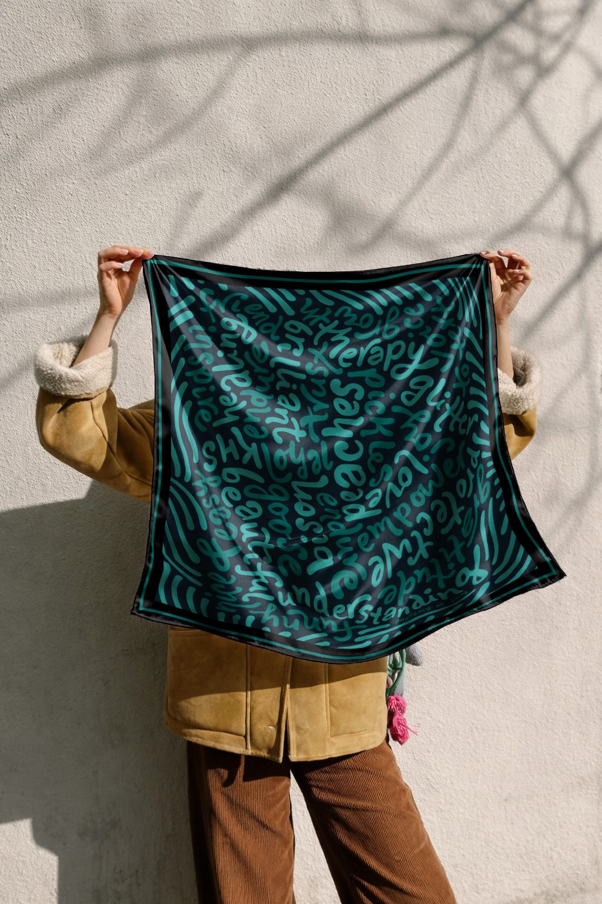

Custom story scarves and keepsakes
Your story, illustrated and wrapped in joy.
We turn places, milestones, and memories into custom silk keepsakes you can hold onto forever.
Start Your Story
3-step custom process

 8.png)